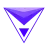

ClarifaiПоиск и анализ
В инструменте «Clarifai» можно исследовать тему и разбирать найденную информацию. Ещё одно направление работы: считывать текст с изображения.
Поиск и анализ: Определите вопрос и допустимые источники. Проверяйте, поддерживают ли найденные материалы вывод ответа.
Сформулируйте узкий вопрос и требуемый тип источников. В Молекуле есть страница Perplexity для поиска; открывайте найденные материалы и проверяйте, подтверждают ли они конкретный вывод.
Найди первичные материалы о требованиях к маркировке упаковки выбранного товара. Укажи регион, дату документа и ссылки. Если применимость зависит от категории товара, отметь это.

В инструменте «Clarifai» можно исследовать тему и разбирать найденную информацию. Ещё одно направление работы: считывать текст с изображения.

Fireworks AI используют, чтобы исследовать тему и разбирать найденную информацию. Ещё одно направление работы: готовить ответы на обращения клиентов.
Leni относится к инструментам, которые помогают исследовать тему и разбирать найденную информацию. Ещё одно направление работы: работать с информацией о недвижимости.

Lessie AI используют, чтобы исследовать тему и разбирать найденную информацию. Ещё одно направление работы: собирать видео с цифровым ведущим.
LevelFields относится к инструментам, которые помогают разбирать финансовые показатели и рыночные данные. Ещё одно направление работы: исследовать тему и разбирать найденную информацию.
Manta AI рассчитан на задачи, где нужно исследовать тему и разбирать найденную информацию. Ещё одно направление работы: подготавливать аналитические материалы для рабочих решений.

Powerdrill Bloom относится к инструментам, которые помогают связывать действия в автоматизированный процесс. Ещё одно направление работы: исследовать тему и разбирать найденную информацию.

ViableView используют для задачи: исследовать тему и разбирать найденную информацию. Ещё одно направление работы: подготавливать аналитические материалы для рабочих решений.

Bardeen собирает автоматизации из настраиваемых блоков без написания программного кода. В сценариях можно объединять сбор информации с сайтов, действия в веб-приложениях и передачу данных в Google Sheets. Это инструмент для повторяющихся рабочих операций, где последовательность шагов задаётся самим пользователем.

BlazeSQL связывает вопрос о данных с подготовкой SQL. Полученный запрос следует читать до выполнения, особенно когда важны соединения таблиц и выбор нужного периода.

Danelfin анализирует акции и биржевые фонды с участием ИИ, формируя оценку по набору признаков. Пользователь может рассматривать оценку как отдельный показатель платформы при работе с информацией о фондовых инструментах. Анализ объединяет признаки выбранных акций и ETF в рамках предлагаемого продукта.

Glean используют, чтобы исследовать тему и разбирать найденную информацию. Ещё одно направление работы: обрабатывать голосовые обращения.
Labelbox рассчитан на задачи, где нужно подготавливать данные и оценивать работу моделей. Ещё одно направление работы: собирать рабочие инструменты и операции с данными.

Octolens используют для задачи: исследовать тему и разбирать найденную информацию. Ещё одно направление работы: готовить ответы на обращения клиентов.
Revaluate рассчитан на задачи, где нужно исследовать тему и разбирать найденную информацию. Ещё одно направление работы: работать с информацией о недвижимости.
StockGeist относится к инструментам, которые помогают разбирать финансовые показатели и рыночные данные. Ещё одно направление работы: исследовать тему и разбирать найденную информацию.

WriterZen рассчитан на задачи, где нужно исследовать тему и разбирать найденную информацию. Ещё одно направление работы: готовить текст по теме и требованиям к содержанию.

DocXter рассчитан на задачи, где нужно разбирать содержимое документов. Ещё одно направление работы: исследовать тему и разбирать найденную информацию.

DumplingAI используют, чтобы исследовать тему и разбирать найденную информацию. Ещё одно направление работы: разбирать содержимое документов.
В инструменте «Kavout» можно разбирать финансовые показатели и рыночные данные. Ещё одно направление работы: исследовать тему и разбирать найденную информацию.

Polymer используют для задачи: исследовать тему и разбирать найденную информацию. Ещё одно направление работы: подготавливать аналитические материалы для рабочих решений.

SciSpace объединяет поиск научных публикаций и диалог по PDF. Помогает разбирать сложные фрагменты, сравнивать найденные работы и связывать ответы с разделами исходного документа.
Stats Perform используют для задачи: исследовать тему и разбирать найденную информацию. Ещё одно направление работы: подготавливать план занятий под заданные условия.

StockGPT предназначен для поиска сведений в отчётности Tesla через вопросы к ИИ. Запрос можно привязать к отчётному периоду, чтобы разбирать финансовые материалы компании. Ответы требуют сверки с документами: инструмент не предназначен для прогнозирования будущих результатов или принятия инвестиционных решений вместо пользователя.

Toolify рассчитан на задачи, где нужно исследовать тему и разбирать найденную информацию. Ещё одно направление работы: использовать разные модели через общее рабочее пространство.

Akkio предлагает средства работы с данными и построения прогнозов без написания кода. На платформе предусмотрены преобразование исходной информации, разбор данных и моделей, а также их развёртывание. Пользователь работает со своими материалами; полученный прогноз остаётся модельной оценкой, а не известным будущим результатом.

Brand24 относится к инструментам, которые помогают сокращать материал до основных положений. Ещё одно направление работы: исследовать тему и разбирать найденную информацию.

Defog.ai переводит вопросы о данных в SQL и предоставляет диалоговый виджет для обращения к ним. Запросы можно формулировать на разных языках. Продукт рассчитан на работу с базами и хранилищами данных, где текстовый вопрос служит входом для подготовки обращения к информации.
Dimers рассчитан на задачи, где нужно исследовать тему и разбирать найденную информацию. Ещё одно направление работы: подготавливать план занятий под заданные условия.

DoNotPay используют для задачи: исследовать тему и разбирать найденную информацию. Ещё одно направление работы: готовить ответы на обращения клиентов.
Incite AI относится к инструментам, которые помогают разбирать финансовые показатели и рыночные данные. Ещё одно направление работы: исследовать тему и разбирать найденную информацию.

В инструменте «Nyckel» можно исследовать тему и разбирать найденную информацию. Ещё одно направление работы: готовить текст по теме и требованиям к содержанию.

В инструменте «SEO.ai» можно связывать действия в автоматизированный процесс. Ещё одно направление работы: исследовать тему и разбирать найденную информацию.

MiroFish используют для задачи: исследовать тему и разбирать найденную информацию. Ещё одно направление работы: собирать видео с цифровым ведущим.

Scale AI предоставляет средства работы с данными в процессе машинного обучения. Среди описанных услуг есть аннотирование разных видов материалов. Отдельно представлены изображения и видео, а также данные трёхмерных датчиков, для которых подготавливается разметка в рамках обучения моделей.

Scite показывает контекст научного цитирования и различает поддерживающие, противопоставляющие и упоминающие ссылки. Помогает проверять основания тезиса и готовить ответы по исследовательским источникам.
Страница 2 из 2